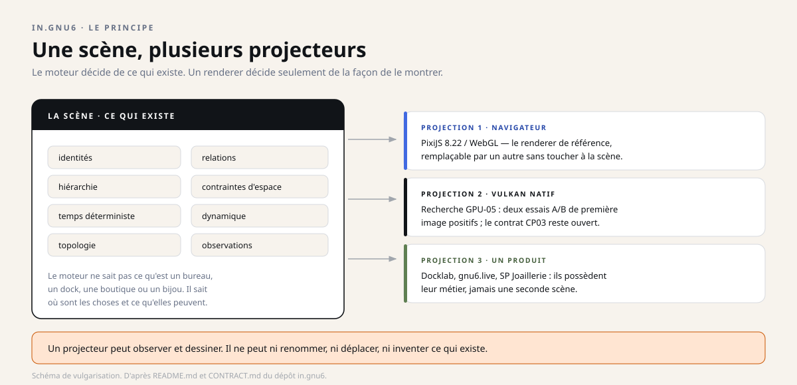
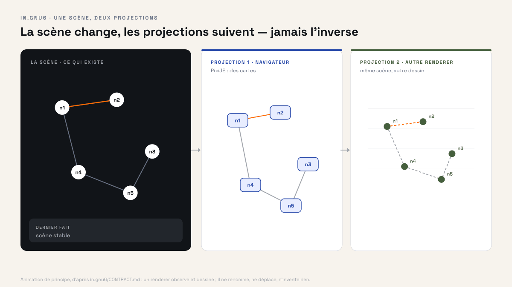
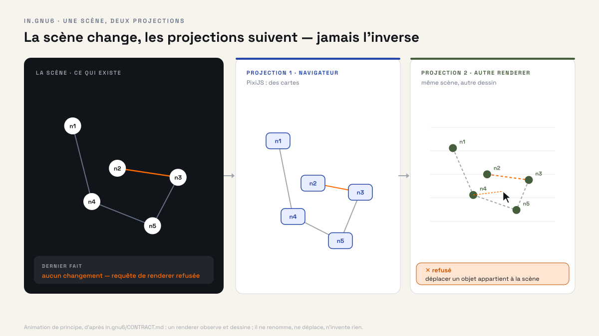
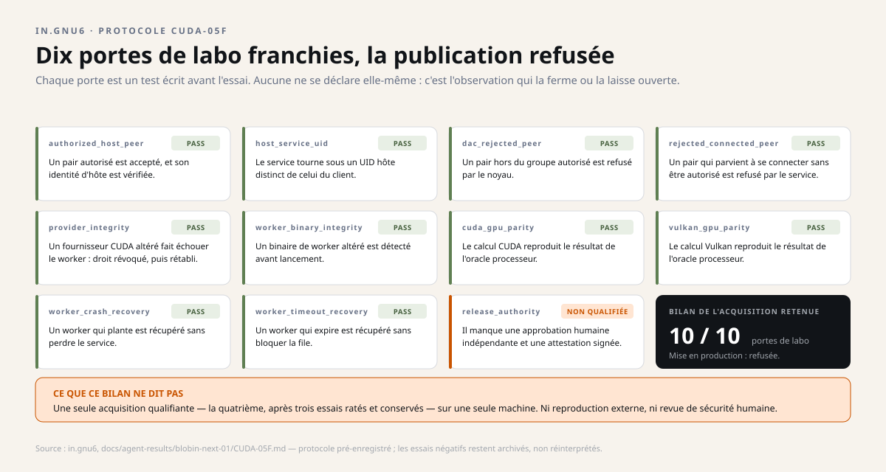

Instantané du 29 octobre 2026. Ce dossier décrit les quatre dépôts tels qu'ils étaient ce jour-là ; les projets ont continué d'avancer depuis, et les dépôts font foi. Les liens soulignés mènent aux sources, figées à leur état de ce jour.
Dossier 4 · la scène
in.gnu6
Un moteur qui décide de ce qui existe dans une scène — positions, relations, temps, contraintes — et laisse chaque affichage décider seulement comment le montrer.
Recherche 2026.10.0-research Pas de licence OSS
Sur cette page
- En une image
- Le principe
- Ce que le moteur possède — et ce qu'il ignore
- Deux produits pour essayer de casser le moteur
- Trois surfaces, trois statuts de vérité
- Les chiffres, et ce qu'ils ne prouvent pas
- Ce que la licence ne dit pas
- Pourquoi c'est un programme de preuve
- Historique : un journal de quêtes, pas une liste de tâches
- Projections : de la recherche au produit
- Ce que ça change, selon qui vous êtes
- Pour aller plus loin
En une image #
Pensez à un théâtre. La scène sait où sont les acteurs, les décors et les passages : c'est elle qui décide de ce qui existe et de ce qui est possible. Les projecteurs éclairent cette scène selon leur propre technique — l'un projette une image, l'autre éclaire en lumière rasante.
Changer de projecteur ne déplace pas les acteurs. C'est toute la séparation que défend in.gnu6 : le rendu est remplaçable, la scène ne l'est pas.
Le principe #

La plupart des moteurs graphiques mélangent deux questions : « qu'est-ce qui existe ? » et « comment le dessine-t-on ? ». Le mélange tient jusqu'au jour où l'on veut changer de moteur de rendu, exporter une scène, ou faire tourner deux produits sur le même modèle — et là, il faut tout réécrire.
in.gnu6 sépare les deux. Un noyau TypeScript maintient la scène : identités, relations, hiérarchie, contraintes d'espace, temps déterministe, dynamique, topologie, déformations, requêtes et observations reproductibles. Les renderers — un navigateur avec PixiJS, un moteur Vulkan natif, ou un produit consommateur — ne font que projeter cet état.


CONTRACT.md.Ce que le moteur possède — et ce qu'il ignore #
Il possède
- l'identité d'une scène et de ses objets ;
- les relations et la hiérarchie entre eux ;
- les contraintes d'espace et d'admissibilité ;
- un temps déterministe et une dynamique ;
- la topologie et ses changements ;
- des observations reproductibles.
Il ignore
- ce qu'est un bureau, un dock ou un espace de travail ;
- ce qu'est un produit, une boutique, un panier ;
- ce qu'est un bijou ou une action métier ;
- quelle intention commerciale justifie un écran.
Ces significations appartiennent aux produits qui consomment le moteur — pas au moteur.
Deux produits pour essayer de casser le moteur #
Docklab, un dock aux cartes imbriquées, et un harnais pour une bijouterie, un éventail de cartes de tarot : deux métiers que tout oppose. Ils doivent tourner sur le même noyau, sans qu'aucun ne fasse bifurquer ses lois.
C'est le jalon MQ-10. Les deux produits cohabitent dans une seule scène de test, avec une seule horloge, un seul espace et un seul registre des topologies. Ils n'ont droit qu'à des adaptateurs et à de la configuration : aucun nom de produit, aucune branche particulière dans le code du moteur.
L'essai a d'ailleurs trouvé une faute : une hypothèse codée en dur sur le sens dans lequel une carte se soulève. Elle a été réparée, et la remettre fait échouer un test de bout en bout ; une fois corrigé, le noyau passe 96 tests sur 24 fichiers.
Docklab
Un repère attaché au bord de l'écran, des cartes imbriquées, un champ de voisinage, le réordonnancement, et un bord qui change en cours de route.
Le harnais de la bijouterie
Un éventail centré dans la vue, des mesures qui s'adaptent à l'écran, une zone de jeu, le glisser-déposer et le comportement des cartes de tarot.
Trois surfaces, trois statuts de vérité #
| Surface | Ce que c'est | Preuve actuellement admissible |
|---|---|---|
| Noyau TypeScript | Le modèle sans affichage : scène, topologie, espace, temps, interaction | 16 jalons ratifiés ; porte complète à 29 fichiers / 119 tests, build Pixi et 2 tests navigateur |
| PixiJS / WebGL | La projection de référence dans un navigateur, remplaçable | Qualifiée par les jalons MQ-11 (contrat) et MQ-12 (navigateur) |
| Vulkan natif | La recherche d'un rendu natif rapide, hors navigateur | Preuves locales partielles ; le contrat d'acceptation global CP03 reste ouvert |

docs/evidence/assets/.Les chiffres, et ce qu'ils ne prouvent pas #
Deux observations reviennent dans les documents du dépôt, et elles sont intéressantes précisément parce qu'elles sont bornées.
Endurance : 9 370 images présentées en 124,994 secondes, sans une seule image écartée, soit environ 75 images par seconde en moyenne, avec un p95 de 13,478 ms. Mesuré localement, via l'horodatage de présentation du compositeur Wayland.
Échange réel : un programme Rust et le projecteur sémantique TypeScript ont échangé 40 événements Wayland réels sur une socket Unix privée, avec une correspondance de séquence exacte et 1 497 images présentées en 20 secondes, sans perte.
125 secondes, image par image
9 370 images présentées par le compositeur, aucune écartée. 9 368 intervalles tiennent entre 12,9 et 14 ms, autour de la période de l'écran (13,34 ms). Le seul au-delà de 20 ms est le tout premier, au démarrage : 26,65 ms.
- Une seule configuration. Ces mesures viennent d'une machine NVIDIA de référence. Elles ne garantissent rien sur une autre carte, ni sur plusieurs.
- Pas d'entrée-à-photon. Le délai entre un clic et le pixel affiché n'est pas mesuré ; les essais qui s'en approchaient n'ont pas observé de clic réel.
- Une anomalie non expliquée. Un essai antérieur a montré une interruption de 413 ms, jamais élucidée. Elle reste au dossier.
- CP03 reste ouvert. Le contrat d'acceptation global — soixante images par seconde tenues, latence indépendante, audit — n'est pas clos.
Ce que la licence ne dit pas #
Le dépôt est public depuis le 10 octobre 2026, mais la licence n'est pas décidée. Le fichier de paquet déclare explicitement « UNLICENSED ». Un dépôt visible n'accorde donc pas le droit général de copier ou de modifier le code.
S'y ajoutent deux absences assumées : pas d'API publique stable, et aucune publication sur npm. Le moteur s'évalue aujourd'hui comme un programme de recherche documenté, pas comme une dépendance que l'on installe.
Pourquoi c'est un programme de preuve #
Le dépôt ne présente pas une liste de fonctionnalités : il présente une liste de jalons à ratifier. Chacun doit être adossé à une loi, un test de falsification, une observation d'exécution — ou rester explicitement ouvert. Un jalon peut être refusé par un test qui échoue, et le refus reste écrit.
Une expérience annexe du dépôt montre la méthode à l'œuvre. Un superviseur Rust confie un calcul graphique à un processus séparé, sous un compte système distinct, et onze portes sont écrites avant l'essai. Trois acquisitions ont échoué ; elles sont conservées. La quatrième passe les dix portes de laboratoire — et la onzième, l'autorisation de publier, reste refusée faute de revue humaine indépendante.

Les deux produits consommateurs présentés plus haut jouent ici leur rôle : si l'un d'eux avait besoin d'une seconde scène, c'est la séparation qui serait fausse.
Cette discipline explique les chiffres du haut de page : 16 jalons ratifiés ne veulent pas dire « prêt », et 9 370 images sans perte ne veulent pas dire « fluide pour vous ». Chaque nombre porte son cadre.
Historique : un journal de quêtes, pas une liste de tâches #
Le dépôt ne tient pas un carnet de tâches : il tient un journal de quêtes. La quête principale définit ce que « complet » veut dire ; les quêtes annexes gardent ce qu'on a appris en chemin.
Une quête a quinze états possibles, de UNKNOWN à CLOSED, et ils ne forment pas une échelle : « vert en local » n'implique pas « observé », et « observé » n'implique pas « ratifié ». Les quêtes annexes peuvent être urgentes ou précieuses ; elles ne deviennent pas obligatoires pour autant. Leur priorité appartient à l'opérateur humain, et le journal l'écrit en toutes lettres.
Projections : de la recherche au produit #
in.gnu6 est un programme de preuve. Pour devenir une dépendance qu'on installe, il lui faut un rendu natif accepté, une licence, une API stable et une publication — quatre choses qu'il ne revendique pas aujourd'hui.
Ce qui fermerait CP03
Le contrat d'acceptation du rendu natif liste ce qui manque : des mesures indépendantes du délai entre une entrée et l'image affichée, un auditeur technique extérieur, et un essai de l'entrée supervisée de production. L'endurance passe ; l'ensemble, non.
La licence et la publication
Le dépôt est public depuis le 10 octobre, mais déclaré « UNLICENSED » : aucune licence n'est décidée, aucune API n'est stable, rien n'est publié sur npm. Ce sont des portes à part, et aucune n'est datée.
Ce que ça change, selon qui vous êtes #
Curieux
Vous comprenez pourquoi une application peut changer d'apparence sans changer de contenu — et pourquoi « refaire le rendu » n'oblige pas à refaire le modèle.
Développeur
Un noyau TypeScript testé, un contrat de renderer écrit, un renderer navigateur de référence, et une expérimentation Vulkan documentée avec ses échecs. Beaucoup se vérifie sans carte graphique.
Décideur ou financeur
La question posée est industrielle : combien coûte le jour où il faut changer de moteur de rendu ou brancher un deuxième produit ? La réponse est ici une architecture, pas une promesse.
Pour aller plus loin #
Technique — les mots du dépôt
Scène : l'ensemble des objets, relations, positions et contraintes que le moteur considère comme vrais. Projection : la traduction de cette scène en pixels, faite par un renderer. Renderer : le programme qui dessine — navigateur, Vulkan, ou tout autre à venir. Topologie : la carte des places et des liens, y compris quand elle change. wp_presentation : le mécanisme Wayland qui indique quand une image a réellement été présentée à l'écran.
Langages : TypeScript pour le noyau et le renderer de référence ; Rust pour l'expérimentation native. Statut : recherche, sans licence OSS ni API stable.
Reproduire sans amplifier l'autorité
Le noyau se vérifie avec Node.js 24 ou plus : npm ci, puis les contrôles de types, les tests de lois et le parcours navigateur. Ces commandes couvrent trois choses différentes — et aucune ne constitue une qualification graphique.
Les expériences GPU lourdes passent par un lanceur dédié, avec limites de ressources et refus documentés. Le dépôt demande explicitement de ne pas lancer un benchmark Vulkan ou CUDA en contournant ce contrôle.